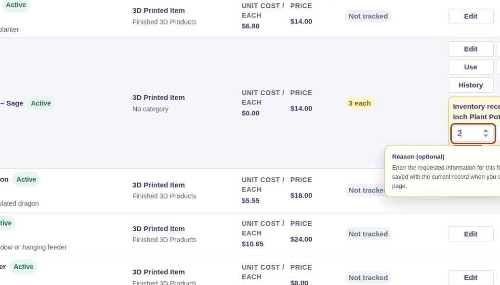
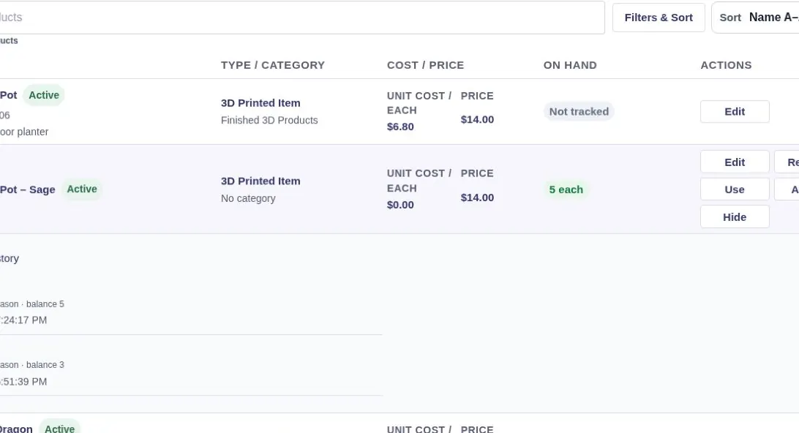
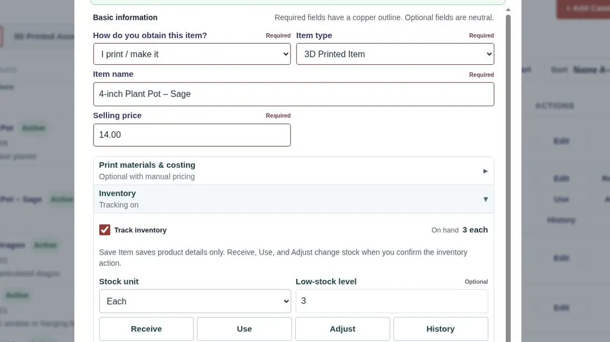
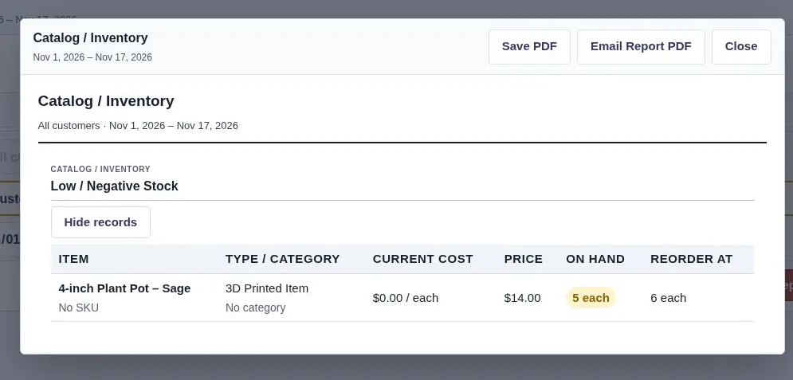

Inventory
Receive stock and identify products that need attention.
Item details and stock adjustments are separate actions. Saving a Catalog item does not add inventory. Use the inventory controls for Receive, Use, Adjust, or Build, as applicable.
Watch: Receive stock for a Catalog item
Recorded in Practice — Sample Data. Follow along in Practice without changing real Business records, or switch to Business to enter your own information.


Watch: Check low stock
Recorded in Practice — Sample Data. Follow along in Practice without changing real Business records, or switch to Business to enter your own information.


Where to go next
Manage item names, prices, costing and categories in Catalog & Pricing. For inventory and sales activity together, see Reports.